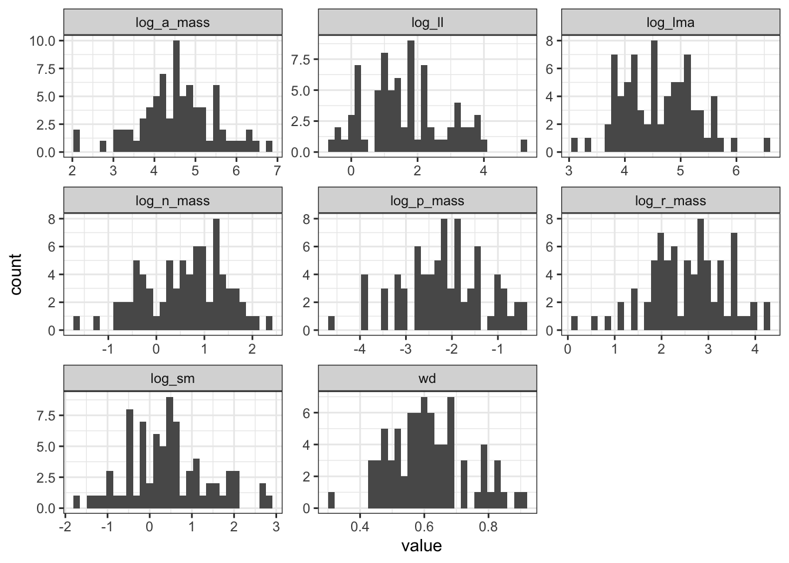

git clone https://github.com/mattocci27/phy-fun-div.gitDiversity calculation
Course materials for 2024-11-10 AFEC at XTBG.
1 Objectives
- Prepare species \(\times\) site matrices and trait data from csv files.
- Calculate diversity indices.
2 Prerequisites
Clone this repo.
The following command (probably) installs all the R packages required for this course.
renv::restore()Otherwise, please install those packages manually without using renv (I might miss some packages).
install.packages("picante")
install.packages("FD")
install.packages("tidyverse")
install.packages("rmarkdown")
install.packages("DT")
install.packages("quarto")Load some packages.
library(tidyverse)
library(picante)
library(FD)3 Data
3.1 Community
First, we import the community data.
d <- read_csv("data/samp.csv")- I prefer
read_csvbutread.csvis fine too. - Our working directory is
phy-fun-div, and the relative path tosamp.csvisdata/samp.csv.
We can also use here package to specify the absolute path to the file.
here::here("data/samp.csv")[1] "/Users/mattocci/Dropbox/5-Tools/ghq/github.com/mattocci27/phy-fun-div/data/samp.csv"d <- read_csv(here::here("data/samp.csv"))but don’t do this:
d <- read_csv("/Users/mattocci/Dropbox/5-Tools/ghq/github.com/mattocci27/phy-fun-div/data/samp.csv")because absolute paths will be different on different computers (lack of reproducibility). It is also uncomfortable to make file system structure public (security risk).
Now let’s look at the community data.
d# A tibble: 40 × 3
Site Species abund
<chr> <chr> <dbl>
1 Site1 Illicium_macranthum 1
2 Site1 Manglietia_insignis 0
3 Site1 Michelia_floribunda 0
4 Site1 Beilschmiedia_robusta 0
5 Site1 Neolitsea_chuii 0
6 Site1 Lindera_thomsonii 0
7 Site1 Actinodaphne_forrestii 0
8 Site1 Machilus_yunnanensis 0
9 Site2 Illicium_macranthum 1
10 Site2 Manglietia_insignis 2
# ℹ 30 more rowsDT::datatable(d)Then, we want to make a species \(\times\) site matrix. tapply is a useful function here.
tapply(d$abund, d$Species, sum)Actinodaphne_forrestii Beilschmiedia_robusta Illicium_macranthum
4 2 5
Lindera_thomsonii Machilus_yunnanensis Manglietia_insignis
5 2 3
Michelia_floribunda Neolitsea_chuii
2 1 samp <- tapply(d$abund, list(d$Site, d$Species), sum)
samp Actinodaphne_forrestii Beilschmiedia_robusta Illicium_macranthum
Site1 0 0 1
Site2 0 2 1
Site3 2 0 1
Site4 2 0 1
Site5 0 0 1
Lindera_thomsonii Machilus_yunnanensis Manglietia_insignis
Site1 0 0 0
Site2 0 0 2
Site3 2 2 0
Site4 2 0 1
Site5 1 0 0
Michelia_floribunda Neolitsea_chuii
Site1 0 0
Site2 2 0
Site3 0 0
Site4 0 0
Site5 0 1class(samp)[1] "matrix" "array" 3.2 Phylogeny
phylo <- read.tree("data/dummy_tree.newick")
plot(phylo)
3.3 Traits
| Abbreviation | Trait | Unit |
|---|---|---|
| LMA | Leaf mass per area | g m-2 |
| LL | Leaf lifespans (longevity) | months |
| Amass | Maximum photosynthetic rates per unit mass | nnoml g-1 s-1 |
| Rmass | Dark respiration rates per unit mass | nnoml g-1 s-1 |
| Nmass | Leaf nitrogen per unit mass | % |
| Pmass | Leaf phosphorus per unit mass | % |
| WD | Wood density | g cm-3 |
| SM | Seed dry mass | mg |
trait <- read_csv("data/dummy_trait.csv")
DT::datatable(trait)3.4 Check how traits look like first
trait_long <- trait |>
pivot_longer(lma:sm, names_to = "trait")
trait_long# A tibble: 616 × 3
sp trait value
<chr> <chr> <dbl>
1 Acer_campbellii lma 234.
2 Acer_campbellii ll 6.05
3 Acer_campbellii a_mass 69.6
4 Acer_campbellii r_mass 4.39
5 Acer_campbellii n_mass 1.37
6 Acer_campbellii p_mass 0.06
7 Acer_campbellii wd 0.5
8 Acer_campbellii sm 1.12
9 Actinodaphne_forrestii lma 138.
10 Actinodaphne_forrestii ll 6.63
# ℹ 606 more rowsggplot(trait_long, aes(x = value)) +
geom_histogram(position = "identity") +
facet_wrap(~ trait, scale = "free") +
theme_bw()Probably we can do log-transformation for all the traits except for WD.
trait2 <- trait |>
mutate(
across(c(lma, ll, a_mass, r_mass, n_mass, p_mass, sm),
~ log(.),
.names = "log_{.col}")) |>
dplyr::select(sp, log_lma, log_ll, log_a_mass, log_r_mass, log_n_mass, log_p_mass, wd, log_sm)
trait2 |>
mutate(across(where(is.numeric), ~ round(., 2))) |>
DT::datatable()trait2 |>
pivot_longer(log_lma:log_sm, names_to = "trait") |>
ggplot(aes(x = value)) +
geom_histogram(position = "identity") +
facet_wrap(~ trait, scale = "free") +
theme_bw()
4 First-order metrics (without phylogeny or traits)
4.1 Species richness
samp > 0 Actinodaphne_forrestii Beilschmiedia_robusta Illicium_macranthum
Site1 FALSE FALSE TRUE
Site2 FALSE TRUE TRUE
Site3 TRUE FALSE TRUE
Site4 TRUE FALSE TRUE
Site5 FALSE FALSE TRUE
Lindera_thomsonii Machilus_yunnanensis Manglietia_insignis
Site1 FALSE FALSE FALSE
Site2 FALSE FALSE TRUE
Site3 TRUE TRUE FALSE
Site4 TRUE FALSE TRUE
Site5 TRUE FALSE FALSE
Michelia_floribunda Neolitsea_chuii
Site1 FALSE FALSE
Site2 TRUE FALSE
Site3 FALSE FALSE
Site4 FALSE FALSE
Site5 FALSE TRUEapply(samp > 0, 1, sum)Site1 Site2 Site3 Site4 Site5
1 4 4 4 3 4.2 Shannon
\(H' = - \sum_i^n p_i\mathrm{log}p_i\), where \(p_i\) is the relative abundance for species i.
shannon <- function(abund) {
p0 <- abund / sum(abund)
p <- p0[p0 > 0]
-sum(p * log(p))
}apply(samp, 1, shannon) Site1 Site2 Site3 Site4 Site5
0.000000 1.351784 1.351784 1.329661 1.098612 You don’t have to reinvent the wheel.
vegan::diversity(samp, index = "shannon") Site1 Site2 Site3 Site4 Site5
0.000000 1.351784 1.351784 1.329661 1.098612 4.3 Nonmetric Multidimensional Scaling (NMDS)
res_mds <- metaMDS(samp)Run 0 stress 0
Run 1 stress 8.398368e-05
... Procrustes: rmse 0.1285842 max resid 0.1982493
Run 2 stress 0
... Procrustes: rmse 0.07496732 max resid 0.116964
Run 3 stress 9.618042e-05
... Procrustes: rmse 0.1288752 max resid 0.1986329
Run 4 stress 0
... Procrustes: rmse 0.03819554 max resid 0.05126035
Run 5 stress 0.09680992
Run 6 stress 8.697903e-05
... Procrustes: rmse 0.1387472 max resid 0.2508296
Run 7 stress 8.629981e-05
... Procrustes: rmse 0.128862 max resid 0.1986234
Run 8 stress 0
... Procrustes: rmse 0.08798621 max resid 0.1554896
Run 9 stress 0.09681029
Run 10 stress 7.644436e-05
... Procrustes: rmse 0.1288825 max resid 0.1986486
Run 11 stress 0.1302441
Run 12 stress 0.1302441
Run 13 stress 0
... Procrustes: rmse 0.03348533 max resid 0.05242781
Run 14 stress 0
... Procrustes: rmse 0.08071222 max resid 0.1270714
Run 15 stress 0
... Procrustes: rmse 0.05629619 max resid 0.08372959
Run 16 stress 0
... Procrustes: rmse 0.04168236 max resid 0.06337937
Run 17 stress 0.09681013
Run 18 stress 8.863569e-05
... Procrustes: rmse 0.1288603 max resid 0.1986292
Run 19 stress 9.5636e-05
... Procrustes: rmse 0.1437712 max resid 0.2608009
Run 20 stress 0
... Procrustes: rmse 0.1263072 max resid 0.172356
*** Best solution was not repeated -- monoMDS stopping criteria:
15: stress < smin
3: stress ratio > sratmax
2: scale factor of the gradient < sfgrminplot(res_mds)
We can use the function ordiplot and orditorp to add text to the plot in place of points to make some more sense.
ordiplot(res_mds, type = "n")
orditorp(res_mds, display = "species", col = "red", air = 0.01)
orditorp(res_mds, display = "sites", cex = 1.25, air = 0.01)
5 Phylogenetic metrics
5.1 Branch length based metric
5.1.1 PD
res_pd <- pd(samp, phylo)
res_pd PD SR
Site1 1.000000 1
Site2 3.022727 4
Site3 2.909091 4
Site4 3.136364 4
Site5 2.454545 3You can always see the help.
?pd5.2 Distance based metric
cophenetic() creates distance matrices based on phylogenetic trees. Let’s see the first 5 species.
cophenetic(phylo)[1:5, 1:5] Acer_campbellii Melia_toosendan Skimmia_arborescens
Acer_campbellii 0.0000000 0.18181818 0.18181818
Melia_toosendan 0.1818182 0.00000000 0.09090909
Skimmia_arborescens 0.1818182 0.09090909 0.00000000
Rhus_sylvestris 0.3636364 0.36363636 0.36363636
Sterculia_nobilis 0.5454545 0.54545455 0.54545455
Rhus_sylvestris Sterculia_nobilis
Acer_campbellii 0.3636364 0.5454545
Melia_toosendan 0.3636364 0.5454545
Skimmia_arborescens 0.3636364 0.5454545
Rhus_sylvestris 0.0000000 0.5454545
Sterculia_nobilis 0.5454545 0.00000005.2.1 MPD
\(MPD = \frac{1}{n} \Sigma^n_i \Sigma^n_j \delta_{i,j} \; i \neq j\), where \(\delta_{i, j}\) is the pairwise distance between species i and j
res_mpd <- mpd(samp, cophenetic(phylo))
res_mpd[1] NA 1.568182 1.454545 1.606061 1.636364The above vector shows MPD for each site.
5.2.2 MNTD
\(MNTD = \frac{1}{n} \Sigma^n_i min \delta_{i,j} \; i \neq j\), where \(min \delta_{i, j}\) is the minimum distance between species i and all other species in the community.
res_mntd <- mntd(samp, cophenetic(phylo))
res_mntd[1] NA 1.181818 1.181818 1.295455 1.2727276 Functional metrics
6.1 Community weighted means (CWM)
\[ \mathrm{CWM}_i = \frac{\sum_{j=1}^n a_{ij} \times t_{j}}{\sum_{j=1}^n a_{ij}} \]
or
\[ \mathrm{CWM}_i = \frac{\vec{a_i} \cdot \vec{t}}{\sum_{j=1}^n a_{ij}}, \]
where \(a_{ij}\) is the abundance of species j in community i, and \(t_{j}\) is a trait value of species j.
tmp <- trait2 |>
filter(sp %in% colnames(samp))
tmp# A tibble: 8 × 9
sp log_lma log_ll log_a_mass log_r_mass log_n_mass log_p_mass wd log_sm
<chr> <dbl> <dbl> <dbl> <dbl> <dbl> <dbl> <dbl> <dbl>
1 Actin… 4.93 1.89 4.41 1.67 -0.329 -2.81 0.67 -0.562
2 Beils… 5.32 2.26 3.91 2.19 -0.211 -3.91 0.82 0.542
3 Illic… 4.95 3.31 3.16 2.21 -0.301 -1.51 0.76 0.336
4 Linde… 5.09 3.18 3.02 2.18 0.278 -2.30 0.65 1.85
5 Machi… 4.77 1.38 4.68 1.97 0.604 -2.12 0.6 -0.416
6 Mangl… 5.64 3.49 3.75 0.788 -0.844 -3.22 0.52 1.40
7 Miche… 5.13 1.45 4.16 1.81 -0.446 -2.66 0.79 0.419
8 Neoli… 4.56 3.14 3.88 2.11 0.0953 -1.77 0.67 0.470(ab <- apply(samp, 1, sum))Site1 Site2 Site3 Site4 Site5
1 7 7 6 3 # %*% denotes inner product
(cws <- samp %*% as.matrix(tmp[, -1])) log_lma log_ll log_a_mass log_r_mass log_n_mass log_p_mass wd
Site1 4.950531 3.307619 3.16167 2.21047 -0.30110509 -1.514128 0.76
Site2 37.140595 17.691123 26.79692 11.77727 -3.30306150 -21.094445 5.02
Site3 34.515738 16.204468 27.36736 13.84681 0.80578218 -15.986646 4.60
Site4 30.624372 16.935228 21.76354 10.68989 -1.24681982 -14.964995 3.92
Site5 14.598364 9.621602 10.06425 6.49657 0.07183682 -5.588670 2.08
log_sm
Site1 0.3364722
Site2 5.0559753
Site3 2.0812603
Site4 4.3110080
Site5 2.6565042(cwm <- cws / ab) log_lma log_ll log_a_mass log_r_mass log_n_mass log_p_mass wd
Site1 4.950531 3.307619 3.161670 2.210470 -0.30110509 -1.514128 0.7600000
Site2 5.305799 2.527303 3.828131 1.682468 -0.47186593 -3.013492 0.7171429
Site3 4.930820 2.314924 3.909622 1.978116 0.11511174 -2.283807 0.6571429
Site4 5.104062 2.822538 3.627257 1.781648 -0.20780330 -2.494166 0.6533333
Site5 4.866121 3.207201 3.354751 2.165523 0.02394561 -1.862890 0.6933333
log_sm
Site1 0.3364722
Site2 0.7222822
Site3 0.2973229
Site4 0.7185013
Site5 0.8855014The species \(\times\) site matrix and the species \(\times\) trait matrix became the trait \(\times\) site matrix.
6.2 Distance based metrics
6.2.1 Prepare a trait distance matrix
We have a data.fame or tibble object of traits. First, we need to prepare a trait matrix, then a distance matrix based on trait values.
trait_mat0 <- as.matrix(trait2[, -1])
rownames(trait_mat0) <- trait2$spLet’s see a subset of the trait matrix
trait_mat0[1:5, 1:5] log_lma log_ll log_a_mass log_r_mass log_n_mass
Acer_campbellii 5.457114 1.8000583 4.242765 1.479329 0.3148107
Actinodaphne_forrestii 4.927543 1.8916048 4.407694 1.669592 -0.3285041
Alnus_nepalensis 3.638112 1.0260416 5.504681 3.098289 2.3504224
Anneslea_fragrans 3.960432 0.7275486 6.057393 3.506458 1.2149127
Beilschmiedia_robusta 5.318953 2.2565412 3.910021 2.188296 -0.2107210Then, we will make a trait distance matrix based on the Euclidean distance. There are other distance measures, for example Gower’s Distance, but we focus on the Euclidean distance today.
Before calculating distance, we need to make sure the unit change in distances is the same for different traits. We will scale trait values so that they have mean = 0 and SD = 1. (e.g., \((X_i - \mu) / \sigma\))
# (trait_mat0 - mean(trait_mat0)) / sd(trait_mat0)
trait_mat <- scale(trait_mat0)
par(mfrow = c(2, 2))
hist(trait_mat0[, "log_lma"])
hist(trait_mat[, "log_lma"])
hist(trait_mat0[, "wd"])
hist(trait_mat[, "wd"])
par(mfrow = c(1, 1))Now we can make a trait distance matrix.
trait_dm <- as.matrix(dist(trait_mat))Let’s see the first 5 species.
trait_dm[1:5, 1:5] Acer_campbellii Actinodaphne_forrestii Alnus_nepalensis
Acer_campbellii 0.000000 1.954761 5.403773
Actinodaphne_forrestii 1.954761 0.000000 4.804102
Alnus_nepalensis 5.403773 4.804102 0.000000
Anneslea_fragrans 4.193623 4.424239 3.814527
Beilschmiedia_robusta 3.189288 2.325313 5.105684
Anneslea_fragrans Beilschmiedia_robusta
Acer_campbellii 4.193623 3.189288
Actinodaphne_forrestii 4.424239 2.325313
Alnus_nepalensis 3.814527 5.105684
Anneslea_fragrans 0.000000 5.482764
Beilschmiedia_robusta 5.482764 0.0000006.2.2 MPD (Mean Pairwise Distance)
mpd(samp, trait_dm)[1] NA 2.928839 2.676953 2.975637 1.825841ses.mpd(samp, trait_dm) ntaxa mpd.obs mpd.rand.mean mpd.rand.sd mpd.obs.rank mpd.obs.z mpd.obs.p
Site1 1 NA NaN NA NA NA NA
Site2 4 2.928839 3.793596 0.7419538 88 -1.165513 0.088
Site3 4 2.676953 3.789534 0.7461640 50 -1.491067 0.050
Site4 4 2.975637 3.804148 0.7350247 115 -1.127187 0.115
Site5 3 1.825841 3.813972 0.9068037 2 -2.192461 0.002
runs
Site1 999
Site2 999
Site3 999
Site4 999
Site5 999Effect size (ES)
\[ ES = \frac{\bar{x_1} - \bar{x_2}}{\sigma} \sim Normal(\bar{x_1} - \bar{x_2}, 1) \]
where \(\bar{x_1}\) is the mean value of \(x_1\), \(\bar{x_2}\) is the mean value of \(x_2\), and \(\sigma\) is the standard deviation of the pooled data.
In null model analyses, we can translate this into a standardized effect size (SES):
\[ SES = \frac{obs - \bar{rand}}{\sigma_{rand}} \]
where obs is the observed metric, \(\bar{rand}\) is the mean value of the metric in null communities, and \(\sigma_{rand}\) is the standard deviation of the metric in the null communities.
6.2.3 MNTD (Mean Nearest Taxon Distance)
mntd(samp, trait_dm)[1] NA 2.276536 1.876506 2.445459 1.572607ses.mntd(samp, trait_dm) ntaxa mntd.obs mntd.rand.mean mntd.rand.sd mntd.obs.rank mntd.obs.z
Site1 1 NA NaN NA NA NA
Site2 4 2.276536 2.834339 0.5316141 153 -1.0492630
Site3 4 1.876506 2.871247 0.5395043 28 -1.8438057
Site4 4 2.445459 2.863711 0.5409778 231 -0.7731408
Site5 3 1.572607 3.152190 0.7141100 5 -2.2119602
mntd.obs.p runs
Site1 NA 999
Site2 0.153 999
Site3 0.028 999
Site4 0.231 999
Site5 0.005 9996.3 Branch length based metric
6.3.1 FD
We will make a functional dendrogram using clustering methods. We use UPGMA in this example.
t_clust <- hclust(dist(trait_mat), method = "average")
plot(t_clust)6.3.2 More functional diversity metrics
res_fd <- dbFD(trait_mat[colnames(samp), ], samp)FEVe: Could not be calculated for communities with <3 functionally singular species.
FDis: Equals 0 in communities with only one functionally singular species.
FRic: To respect s > t, FRic could not be calculated for communities with <3 functionally singular species.
FRic: Dimensionality reduction was required. The last 5 PCoA axes (out of 7 in total) were removed.
FRic: Quality of the reduced-space representation = 0.695053
FDiv: Could not be calculated for communities with <3 functionally singular species. res_fd$nbsp
Site1 Site2 Site3 Site4 Site5
1 4 4 4 3
$sing.sp
Site1 Site2 Site3 Site4 Site5
1 4 4 4 3
$FRic
Site1 Site2 Site3 Site4 Site5
NA 6.01505703 4.54181283 9.66396543 0.07344703
$qual.FRic
[1] 0.695053
$FEve
Site1 Site2 Site3 Site4 Site5
NA 0.7917619 0.8413899 0.8644572 0.8855971
$FDiv
Site1 Site2 Site3 Site4 Site5
NA 0.7470748 0.9287890 0.8174975 0.6170145
$FDis
Site1 Site2 Site3 Site4 Site5
0.000000 2.443241 2.381987 2.547271 1.508275
$RaoQ
Site1 Site2 Site3 Site4 Site5
0.000000 6.419861 5.759472 6.713122 2.302551
$CWM
log_lma log_ll log_a_mass log_r_mass log_n_mass log_p_mass wd
Site1 0.5249563 1.3496239 -1.5105190 -0.4140209 -1.0757222 0.7212709 1.2244445
Site2 1.0668453 0.7142369 -0.7964482 -1.0456671 -1.2806095 -0.9147586 0.8671795
Site3 0.4948903 0.5413029 -0.7091354 -0.6919847 -0.5763246 -0.1185632 0.3670086
Site4 0.7591360 0.9546374 -1.0116719 -0.9270185 -0.9637741 -0.3480964 0.3352517
Site5 0.3962061 1.2678562 -1.3036447 -0.4677900 -0.6857102 0.3407195 0.6686990
log_sm
Site1 -0.1058192
Site2 0.2882270
Site3 -0.1458043
Site4 0.2843654
Site5 0.4549306